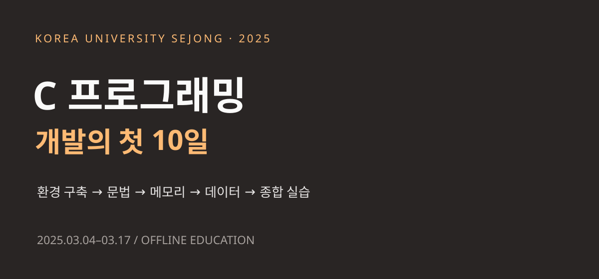

KOREA UNIVERSITY SEJONG / 2025 / SUBJECT 01
C 프로그래밍,
개발의 첫 10일
리눅스를 설치하던 첫날부터 볼링 점수 계산 실습까지.
장기 개발자 양성 과정의 출발을 만든 C 수업의 기록.
빅데이터·IoT 소프트웨어 개발자 과정
긴 과정의 기초를 만드는 시간
2025년 3월부터 7월 15일까지 이어진 고려대 세종캠퍼스의 장기 개발자 양성 과정. 과정 전반을 감독하고 수업과 프로젝트를 지도한 경험을 과목별로 기록합니다. 첫 편은 C 프로그래밍입니다.
- 교육 기관·형태
- 고려대학교 세종캠퍼스 · 오프라인
- 이 글의 범위
- 3월 4–7일, 10–14일, 17일
C 기초·응용 및 과목 종합 실습 - 학습 환경
- VMware · Ubuntu 22.04 · GitHub
C · Make · MySQL · CMake · VS Code - 다음 학습 단계
- 3월 18일부터 ATmega128 임베디드 수업
MADAM 대표 활동 이전에 진행한 최수길의 교육 경험입니다. 날짜별 수업 기록과 당시 강의계획서·업무일지를 대조해 작성했습니다.
문법을 배우는 시간과 프로그램을 만드는 시간은 함께 흘렀다. 작은 계산에서 시작해 데이터를 묶고, 함수로 나누고, 데이터베이스에 저장하는 과정으로 수업을 확장했다.

2025 / 03.04
개발 환경부터 직접 만들기
장기 개발자 과정의 첫 수업은 VMware에 Ubuntu 22.04를 설치하는 것으로 시작했다. 코드를 입력할 편집기뿐 아니라 파일을 저장할 위치, 터미널에서 이동하는 방법, 소스 파일을 실행 파일로 만드는 과정을 함께 익혔다. GitHub 계정과 저장소를 만들고 clone을 실습하면서 이후 수업 코드를 관리할 작업 공간도 준비했다.
첫날부터 자료형 설명과 작은 프로그램 작성을 오갔다. 온도 변환 예제에서는 정수와 실수로 계산했을 때 결과를 살펴보고, 문자형 예제에서는 문자와 값의 관계를 확인했다. nano로 소스를 수정하고 Makefile과 make를 사용해 다시 빌드하는 순서가 이날의 중요한 실습 흐름이었다.
이 단계의 의미는 개발 도구의 이름을 익히는 데 그치지 않는다. 소스 수정, 빌드, 실행, 결과 확인을 스스로 반복할 수 있어야 이후 과목에서 새로운 라이브러리와 장치를 만나도 같은 순서로 문제를 좁혀 갈 수 있다. 첫날의 환경 구축을 독립적인 학습 내용으로 배치한 이유다.
2025 / 03.05–03.07
조건과 반복으로 문제를 표현하기
3월 5일에는 산술·증감·복합 대입 연산자에 이어 관계·논리·비트 연산자를 다뤘다. 자료형의 크기와 메모리 연산을 함께 살펴보며, 같은 기호라도 피연산자의 자료형과 계산 순서에 따라 결과가 달라질 수 있다는 점을 예제로 확인했다.
6일에는 if와 switch, for 등으로 실행 흐름을 나누었다. 절댓값, 윤년 판별, 점수에 따른 분기처럼 조건이 분명한 문제를 코드로 옮기고, 구구단과 이중 반복문으로 반복 횟수와 출력 순서의 관계를 살폈다. main 함수의 argc·argv도 설명해 실행 시 전달되는 입력을 다루었다.
7일에는 while과 do-while을 비교하고 break·continue, 함수와 변수의 범위를 정리했다. 주사위와 배열 합산, 행렬 합산 예제로 여러 값을 저장하고 순회하는 연습을 이어 갔다. 이어 숫자 야구 게임의 구조를 설명하면서 개별 문법을 하나의 문제에 함께 사용하는 단계로 넘어갔다.
운영 기록에는 비트 연산에 대한 보충 지도의 필요성과 반복문·배열 예제의 강화가 남아 있다. 진도표대로 새로운 문법을 추가하는 것과 함께, 앞서 배운 내용을 다시 사용하도록 예제를 배치하는 일이 초반 수업의 중요한 부분이었다.
2025 / 03.10
배열과 포인터를 함수 안에서 연결하기
주말 뒤 첫 수업은 숫자 야구 게임 풀이와 복습으로 시작했다. 이후 선택정렬·버블정렬·qsort를 비교하고 swap 함수와 배열 전달 예제로 포인터를 다뤘다. 엔디언, 이중 포인터, 함수 포인터, void 포인터도 이날의 설명 범위에 포함됐다.
포인터를 배우는 지점에서는 주소를 표기하는 문법과 함수가 실제로 바꾸는 대상을 함께 이해해야 한다. swapFunction, sumArrayFunction, sumMatrixFunction 등의 예제는 값 교환과 배열 합산이라는 익숙한 문제를 통해 함수와 메모리의 관계를 다시 살펴보는 재료였다.
주간 업무일지에는 배열과 포인터를 혼동하는 상황에 대응해 설명과 실습을 반복했다는 기록이 있다. 이 글에서는 이를 교육생 개인의 수준이나 평가로 소개하지 않고, 다음 학습으로 넘어가기 전에 개념을 보강한 수업 운영의 사례로 정리한다.
2025 / 03.11
데이터를 묶고 소스 파일을 나누기
11일에는 함수 포인터를 복습한 뒤 여러 소스 파일을 나누어 컴파일하고 Makefile로 빌드하는 실습을 진행했다. 한 파일 안에서 순서대로 작성하던 코드를 기능별로 나누어 보는 전환점이었다.
구조체와 날짜 데이터 예제를 통해 서로 관련된 값을 하나의 자료형으로 표현했다. 문자열 상수와 문자열 배열을 비교하고 stringExample.c와 myString.h 작성으로 문자열 처리와 함수 선언을 연결했다. 강의계획과 수업 기록에는 파일 생성, 파일 포인터와 디스크립터에 관한 내용도 포함되어 있다.
이날의 학습은 이후 도서 관리 예제의 데이터 구조와 분할 컴파일로 이어진다. 정보를 어떤 단위로 묶을지, 다른 소스 파일에서 사용할 기능을 어디에 선언할지 생각하는 과정이 문법 학습과 함께 시작됐다.
2025 / 03.12–03.14
C 프로그램을 데이터베이스와 연결하기
12일에는 MySQL 설치와 데이터베이스·테이블 생성, 기본 쿼리 실행을 진행했다. Book 테이블에 데이터를 넣고 libmysqlclient를 이용하는 bookSql.c 예제로 C 프로그램에서 데이터베이스에 연결하고 쿼리를 실행하는 흐름을 다뤘다. 도서 추가 함수를 작성하는 과제도 제시했다.
13일에는 malloc·calloc·realloc·free 등 동적 메모리 관련 개념, union과 enum을 학습하고 도서 관리 예제에 적용했다. 삭제·변경·조회 기능을 확장하는 과제를 통해 입력, 데이터 처리, 저장의 흐름을 여러 함수로 나누었다. 14일에는 과제 수행과 디버깅, 표준 입출력 함수 정리, SQL 예제의 분할 컴파일을 이어 갔다.
이 실습은 나중에 다룰 IoT 데이터 처리의 기초와도 연결된다. 화면에 한 번 출력하고 끝나는 값과 데이터베이스에 남겨 다시 조회할 수 있는 값의 차이를 경험하고, C 코드와 외부 라이브러리 사이의 연결 지점을 접할 수 있기 때문이다.
운영 기록에는 MySQL 클라이언트 라이브러리 연동 문제와 개발 환경 재설정 안내가 남아 있다. 코드를 고치는 일과 실행 환경을 확인하는 일을 구분하면서, 연결이 되지 않는 원인을 단계적으로 살펴보는 경험도 수업에 포함됐다.
2025 / 03.12–03.14
CMake와 디버깅을 수업의 일부로
CMake는 문법 수업이 끝난 뒤 따로 소개하는 도구가 아니라 MySQL 연동 실습과 함께 등장했다. CMakeLists.txt 작성, 하위 디렉터리 설정, VS Code 디버깅 환경 구성을 진행하며 여러 파일과 라이브러리가 포함된 프로그램을 빌드했다.
수업 중에는 CMake kit 설정이 누락되는 문제와 컴파일 오류를 함께 확인했다. 운영 기록은 추가 설명과 환경 설정 보완이 필요했음을 보여 준다. 따라서 이 시기의 교육을 소개할 때에는 완성된 예제만 나열하기보다, 실제로 빌드하고 오류를 추적하는 시간까지 포함해 설명할 필요가 있다.
장기 과정에서 이러한 경험은 반복해서 사용된다. 이후 임베디드와 네트워크 과목에서는 코드 외에 보드 설정, 통신 조건, 라이브러리가 더해지므로, 초반부터 개발 환경을 확인하는 습관을 함께 다루는 것이 중요했다.
2025 / 03.14–03.17
볼링 점수 계산으로 기본기를 모으기
14일에는 C 과목의 종합 과제로 볼링 점수 계산기를 안내했고, 17일에는 표준 입출력을 복습한 뒤 구현 실습과 시험을 진행했다. 장기 과정 전체의 최종 프로젝트와는 별개의 C 과목 마무리 실습이다.
볼링은 투구 입력, 프레임별 기록, 스트라이크·스페어 처리, 누적 점수 표시를 연결해야 하는 문제다. 배열로 값을 저장하고, 조건으로 점수 규칙을 구분하며, 반복문으로 프레임을 순회하고, 함수로 역할을 나누는 방식으로 앞선 내용을 종합할 수 있다.
강사 저장소의 예제에는 점수 초기화, 계산, 입력 검증 등의 함수가 나뉘어 있다. 이는 실습 구조를 살펴볼 수 있는 참고 코드이며 교육생 전원의 제출물이나 완성도를 뜻하지는 않는다. 운영 기록으로 확인되는 사실은 17일에 구현 실습과 평가가 진행됐다는 점이다.
다음 날인 18일부터는 ATmega128 구조와 PlatformIO, 포트 제어 수업으로 넘어갔다. 화면 안에서 조건과 반복으로 처리하던 코드가 실제 장치의 입출력을 다루는 단계로 이어지는 셈이다. 이번 글은 그 출발점인 C 프로그래밍 10일의 수업에 범위를 두었다.
참조 자료와 기록 범위
- 1. 강사 수업 기록 · C programming class ↗
2025.03.04–03.17 날짜별 수업 내용. 본문의 수업 일정과 실습 주제를 확인하는 기본 자료. - 2. 강사 예제 · 도서 관리 C 코드 ↗
MySQL 연동과 도서 추가·삭제·변경·쿼리 처리의 코드 구조 참고. - 3. 강사 예제 · 볼링 점수 계산 ↗
점수 초기화·계산·입력 검증을 나누는 예제 구조 참고.
공개 코드와 수업 기록은 동일한 저장소 리비전에 고정해 연결했습니다. 수업 당시 기록과 현재 보관된 참고 코드의 역할을 구분하며, 코드를 교육생의 성과나 전원 달성 결과로 제시하지 않습니다.
운영 내용 대조: 「C 프로그래밍 강의계획서」(2025.03.04), 「주간 업무일지」(2025.03.07·03.14·03.21). 해당 내부 원본은 공개 첨부하지 않았습니다. 개인별 평가·제출물·연락처와 교육생 계정이 담긴 공용 슬라이드는 이 페이지의 참조 대상에서 제외했습니다.